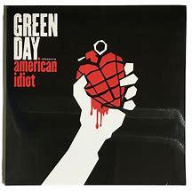

American Idiot
Green Day
Label: Reprise Records
Released: 2004
Country: US
Style: Pop Punk, Alternative Rock
Tracklist:
American Idiot 2:54Jesus Of Suburbia (9:08)
City Of The Damned
I Don't Care
Dearly Beloved
Tales Of Another Broken Home
Holiday 3:53
Boulevard Of Broken Dreams 4:21
Are We The Waiting 2:43
St. Jimmy 2:55
Give Me Novacaine 3:26
She's A Rebel 2:00
Extraordinary Girl 3:34
Letterbomb 4:06
Wake Me Up When September Ends 4:46
Homecoming (9:19)
The Death Of St. Jimmy
East 12th St.
Nobody Likes You
Rock And Roll Girlfriend
We're Coming Home Again
Whatsername